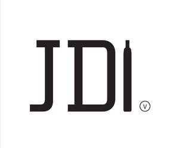

Trade Mark Journal No.2026/005 30 January 2026
UK00004299658 24 November 2025 (9,34,35)

- Class 9
- Batteries; Electronic cigarette batteries; Batteries for electronic cigarettes; Vaporizer batteries; Chargers; Chargers for batteries; Battery chargers for electronic cigarettes; USB chargers for electronic cigarettes; Chargers for vaporizers; Chargers for vape devices; Portable charging cases for electronic cigarettes and vaporizers; Chargers for electronic cigarettes; Chargers for electronic smokers' articles; Vape pen batteries; Vape device batteries; Threaded vape pen batteries; Threaded vape device batteries; Threaded electronic cigarette batteries; Threaded electronic cigarette batteries for attaching electronic cigarette components; Batteries for electronic smokers' articles.
- Class 34
- Oral vaporizers for smokers; Smokeless cigarette vaporizer pipes; Vaporizers for smoking purposes; Electronic cigarette cartomizers; Electronic cigarette atomizers; Liquids for electronic cigarettes; Liquid for electronic cigarettes; Electronic cigarette liquid [e-liquid] comprised of flavorings in liquid form used to refill electronic cigarette cartridges; Electronic cigarette liquid [e-liquid] comprised of flavourings in liquid form used to refill electronic cigarette cartridges; Electronic cigarette liquid [e-liquid] comprised of vegetable glycerin; Electronic cigarette liquid [e-liquid] comprised of propylene glycol; Liquid nicotine solutions for electronic cigarettes; Liquid solutions for use in electronic cigarettes; Liquid nicotine solutions for use in electronic cigarettes; Electronic cigarette boxes; Electronic cigarette cases; Electronic cigarette cleaners; Cases for electronic cigarettes; Cartridges for electronic cigarettes; Replaceable cartridges for electronic cigarettes; Tanks for electronic cigarettes; Re-usable cartridges for electronic cigarettes; Re-usable tanks for electronic cigarettes; Holders for electronic cigarettes; Refill cartridges for electronic cigarettes; Smoking sets for electronic cigarettes; Electronic cigarettes for use as an alternative to traditional cigarettes; Smokers' articles; Electronic cigarette hardware components; Vape hardware components.
- Class 35
- Advertising; Marketing; Promotional services; Advertising, marketing and promotional services in relation to electronic cigarettes, vaping products and related goods; Retail, online retail, wholesale, import and export services in relation to electronic cigarettes, liquid solutions for use in electronic cigarettes and electronic cigarette parts and accessories; Retail and online retail services in relation to batteries, electronic cigarette batteries, batteries for electronic cigarettes, vaporizer batteries, chargers, chargers for batteries, battery chargers for electronic cigarettes, usb chargers for electronic cigarettes, chargers for vaporizers, chargers for vape devices, portable charging cases for electronic cigarettes and vaporizers, chargers for electronic cigarettes, chargers for electronic smokers' articles, vape pen batteries, vape device batteries, threaded vape pen batteries, threaded vape device batteries, threaded electronic cigarette batteries, threaded electronic cigarette batteries for attaching electronic cigarette components, batteries for electronic smokers' articles, oral vaporizers for smokers, smokeless cigarette vaporizer pipes, vaporizers for smoking purposes, electronic cigarette cartomizers, electronic cigarette atomizers, liquids for electronic cigarettes, liquid for electronic cigarettes, electronic cigarette liquid [e-liquid] comprised of flavorings in liquid form used to refill electronic cigarette cartridges, electronic cigarette liquid [e-liquid] comprised of flavourings in liquid form used to refill electronic cigarette cartridges, electronic cigarette liquid [e-liquid] comprised of vegetable glycerin, electronic cigarette liquid [e-liquid] comprised of propylene glycol, liquid nicotine solutions for electronic cigarettes, liquid solutions for use in electronic cigarettes, liquid nicotine solutions for use in electronic cigarettes, electronic cigarette boxes, electronic cigarette cases, electronic cigarette cleaners, cases for electronic cigarettes, cartridges for electronic cigarettes, replaceable cartridges for electronic cigarettes, tanks for electronic cigarettes, re-usable cartridges for electronic cigarettes, re-usable tanks for electronic cigarettes, holders for electronic cigarettes, refill cartridges for electronic cigarettes, smoking sets for electronic cigarettes, electronic cigarettes for use as an alternative to traditional cigarettes, smokers' articles, electronic cigarette hardware components, vape hardware components; Information, consultancy and advisory services relating to all the aforesaid services.
JDI INTL LTD
Representative: Trade Mark Wizards Limited